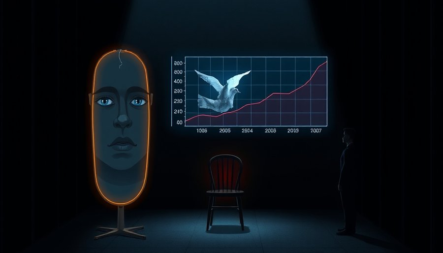

微软云与AI事业部（Cloud + AI）有6万多名员工。今年早些时候，高管预计公司内部使用Anthropic技术的年度支出至少达到10亿美元。此后，微软要求员工减少使用Claude，更多转向自研工具，相关预算削减超三分之一。最直观的变化是额度：此前每名员工每月可用价值10万美元的AI模型，近期在多数场景下压缩到约1万美元。部分工程师不满，因为模型使用不再自由。
表面看，这是一次成本控制。AI调用太贵，公司花不起了。但这个解释漏掉了一个关键细节：高管不仅砍预算，还开始监控员工每日AI消耗，以及员工在GitHub Copilot上调用的具体模型。省钱不需要监控到人。砍掉一些项目、限制总预算就够了。监控每个员工的每日调用行为，说明AI已经被当成一种需要持续治理的资源，而不是一次性的工具采购。
这背后的原因很简单：AI的成本结构与企业软件完全不同。企业软件是买断或订阅的固定成本，买完之后边际成本趋近于零。AI是每次调用都在花钱，账单随使用量线性膨胀。当一个6万人的部门放开额度，潜在消耗没有固定上限，只会随着员工生产力同步上升。财务部门第一次面对一种“软件成本随人越来越贵”的账簿。这次砍预算，本质是建立一套全新的成本治理体系。

为什么集中爆发在2026年下半年？三个机制在同时起作用。
第一个机制是AI的计费方式。历史上，企业软件是固定成本，买完随便用。AI不一样，它是按量计费的可变成本。员工每问一次、每生成一段代码，都在产生费用。当AI从少数专家的实验品变成全员日常工具，账单就从涓涓细流变成泄洪。一家6万人的公司，如果每人每月用掉1万美元的额度，一个月就是6亿美元。即便实际使用远低于额度上限，潜在风险也足以让CFO坐不住。这不是AI独有的问题，但它是第一次让“思考”本身变成可计量的消耗。
第二个机制是技术采用周期。2023到2025年是AI的战略投入期，企业把AI视为军备竞赛，宁可烧钱也不掉队，ROI可以后算。到了2026年，AI进入主流采用期，从炫技项目变成日常工具。财务审计进场，开始追问每一笔支出的回报。云计算在2015到2017年走过完全相同的路：早期企业大量上云，不计成本；随后云账单暴涨，FinOps应运而生。今天AI的FinOps化，不过是历史重演。
第三个机制是微软的双重身份。它既是Anthropic的大客户，又是AI平台的竞争者。内部大额调用Claude，等于一边给对手贡献收入，一边用自己的云成本为对手打磨产品。削减非自研模型使用，既是省钱，也是把内部消耗转化为自家模型的训练与验证场。当一家公司同时是买家和卖家，它的成本决策就不再只是财务问题，而是竞争策略的一部分。
这三个机制叠加，让微软的砍预算不是孤立事件。2026年下半年起，多家公司开始系统性降低AI成本。尝鲜期结束了。
这次转折的影响沿着两条主线展开：定价和架构。
模型厂商的质量溢价模式正在被大客户集体挑战。过去两年，闭源模型靠“最好”收取高溢价，企业愿意付是因为没有替代品。现在蒸馏、缓存、MoE、专用小模型等技术让“足够好且便宜”成为现实。企业开始算账：一个顶级模型生成一段代码的成本，是否真的值回它比次优模型多节省的工时？当答案越来越模糊，预算就会流向性价比更高的选项。AI没有变慢，市场在筛选真实价值。代码生成、客服、数据分析等回报明确的场景优先获得资源，实验性AI项目被砍。对行业而言，这是筛选而非降温，留下的都是真正产生价值的应用。
架构层面，混合部署正在成为标准。简单任务交给小模型或开源模型，复杂任务才动用顶级闭源模型。企业内部出现模型选择、路由和成本治理的中间层，AI FinOps成为新职业与新工具品类，就像当年云成本治理催生的FinOps一样。纯模型公司的护城河从模型质量转移到企业集成深度、专有能力、私有化部署与合规。只有模型好、没有企业服务层的厂商，会被大客户的自研成本账本逐出预算。
有人担心这会抑制创新。短期看，顶级模型的研究投入可能受价格战影响。但长期看，市场在用脚投票：如果“最好”不能带来可量化的专有收益，企业就不会持续付费。这倒逼模型厂商把溢价建立在可验证的回报上，比如代码生成节省的工时、安全合规的免罚保障。创新不会消失，只是方向会变。
回到微软内部，最刺痛神经的不是预算数字，而是监控本身。高管现在可以看到员工每日AI消耗，以及员工在GitHub Copilot上调用的具体模型。过去AI被当作一种近乎无限的资源，员工可以自由尝试各种模型。现在它变成了一种需要分配的生产资料，使用之前要掂量成本，使用之后会被记录。
这种转变在员工中引发不满，但它正是技术成熟化的标志。一项技术开始被精细计量成本，说明它已经重要到值得被管理。电、水、云计算，都走过这条路。AI自由使用的幻觉破灭，说明它终于被认真对待。
当一家公司开始监控员工每天调用哪个模型，AI就从新奇事物变成了基础设施。基础设施的下一问永远是成本，成本的下一问是谁在用、用得值不值。当最好的模型与够用且便宜的模型之间的差距持续缩小，企业还会为最好付溢价吗？这个问题目前没有答案，但它将决定下一阶段模型厂商的生存逻辑。
尾声
微软的举动不是孤例。2026年下半年，多家公司开始系统性降低AI成本，AI FinOps从概念变成岗位。下一个被招进企业高层的，可能是首席AI成本官。
小汪老师的成长观察笔记